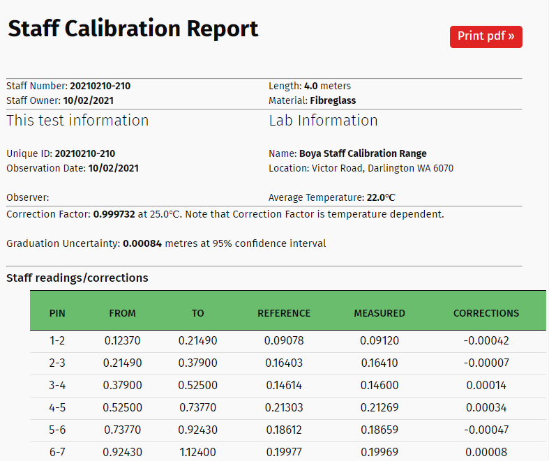

Views & Templates¶
Overview¶
View takes a web request (through a URL) and returns a web response (such as a web page). In between, it does everything including retreiving and updating database, reading and processing form data, and many others to return the requested response.
Here, the view will first render the StaffForm, process the submitted data, update the tables in the database, generate a staff calibrate report, and finally render it in a pdf format.
The most complex part here is the least squares computation to perform the staff calibration and the functions that are required by the view.
Function-based View¶
Let’s create a function-based view called calibrate in the file views.py. This view will take the request and render the StaffForm, fetch data from the models, read and process the submitted form data, update the database, and display the staff calibration report as a web page.
# filename: staff/staff_calibration/views.py
from django.shortcuts import render, redirect
from django.contrib import messages
import csv, io, numpy as np
from math import sqrt
from .forms import StaffForm
from .models import uCalibrationUpdate, uRawDataModel
from staffs.models import Staff, StaffType
from range_calibration.models import RangeParameters
from datetime import date
from django.contrib.auth.decorators import login_required
from django.core.exceptions import ObjectDoesNotExist
from datetime import datetime
from staffs.models import Staff
from django.db.models import Q
def calibrate(request):
if request.method == 'POST':
form = StaffForm(request.POST, request.FILES, user=request.user)
if form.is_valid():
data = form.cleaned_data
# Staff Attributes from Form
staff_number = data['staff_number'].staff_number
level_number = data['level_number'].level_number
observation_date = data['calibration_date']
update_index = data['calibration_date'].strftime('%Y%m%d')+'-'+data['staff_number'].staff_number
st_tmp = data['start_temperature']; end_tmp = data['end_temperature']
ave_temperature = (float(st_tmp)+float(end_tmp))/2
# Ge staff attributes from model
this_staff = Staff.objects.get(staff_number=staff_number)
Staff_Attributes = {'dObsTemperature': ave_temperature,
'dStdTemperature': this_staff.standard_temperature,
'dThermalCoefficient': this_staff.staff_type.thermal_coefficient*10**-6}
month = observation_date.strftime('%b')
# Getting the range
range_value = RangeParameters.objects.values_list('pin', month)
if range_value.exists():
# read file and data
thisFile = request.FILES['document']
if thisFile.name.endswith('.csv') or thisFile.name.endswith('.txt'):
io_string = io.StringIO(thisFile.read().decode('utf-8'))
csv_reader = csv.reader(io_string, delimiter=',', quotechar="|")
next(csv_reader)
staff_reading = []
for row in csv_reader:
staff_reading.append(row)
# save raw data to model
if uRawDataModel.objects.filter(update_index=update_index).count()<1:
for pin_number, reading, no_of_readings, stdev in staff_reading:
uRawDataModel.objects.create(
user = request.user,
staff_number=staff_number,
calibration_date=observation_date,
pin_number=pin_number,
staff_reading = reading,
number_of_readings = no_of_readings,
standard_deviations=stdev)
# preprocess data
staff_reading2 = preprocess_staff(staff_reading)
# compute scale factor
CF, GradUnc, StaffCorrections, CF0, T_at_CF_1, Correction_Lists = process_correction_factor(staff_reading2,
range_value,
Staff_Attributes)
# update calibration_update table
if not uCalibrationUpdate.objects.filter(update_index=update_index):
uCalibrationUpdate.objects.create(
user = request.user,
staff_number=data['staff_number'],
level_number=data['level_number'],
calibration_date = observation_date,
processed_date = date.today(),
correction_factor = round(CF,6),
observed_temperature = ave_temperature,
correction_factor_temperature = this_staff.standard_temperature)
this_staff.calibration_date = observation_date
this_staff.correction_factor = round(CF,6)
this_staff.save()
observer = request.user.first_name +' ' + request.user.last_name
context = {
'update_index': update_index,
'observation_date': observation_date.strftime('%d/%m/%Y'),
'staff_number': staff_number,
'staff_length': Staff.objects.get(staff_number=staff_number).staff_length,
'staff_type': StaffType.objects.get(staff__staff_number=staff_number).staff_type,
'thermal_coefficient':StaffType.objects.get(staff__staff_number=staff_number).thermal_coefficient*10**-6,
'level_number': level_number,
'observer': observer,
'average_temperature': ave_temperature,
'ScaleFactor': CF,
'GraduationUncertainty': GradUnc,
'StaffCorrections': StaffCorrections,
'ScaleFactor0': CF0,
'Temperatre_at_1': T_at_CF_1,
'CorrectionList': Correction_Lists,
}
return render(request, 'staff_calibration/staff_calibration_report.html', context)
#return redirect('staff_calibration:staff-guide')
else:
messages.warning(request, 'No range measurements exist for the month of '+month+'. Please try again later.')
return render(request, 'staff_calibration/staff_calibrate.html', {'form':form})
else:
form = StaffForm(user=request.user)
return render(request, 'staff_calibration/staff_calibrate.html', {'form':form})
Associated functions include:
File-handling
# handle data file def handle_uploaded_file(f): file_path = "data/"+f.name with open(file_path, 'wb+') as destination: for chunk in f.chunks(): destination.write(chunk) return file_path
Pre-processing - staff reading to height differences
# Preprocess staff readings to calculate the height differences between pins def preprocess_staff(data_set): data_set = np.array(data_set, dtype=object) observation_set = [] for i in range(len(data_set)-1): pini, obsi, nmeasi, stdi = data_set[i] pinj, obsj, nmeasj, stdj = data_set[i+1] if float(stdi) == 0: stdi = 10**-5 if float(stdj) == 0: stdj = 10**-5 dMeasuredLength = float(obsj)- float(obsi) dStdDeviation = sqrt(float(stdi)**2 + float(stdj)**2) observation_set.append([str(pini)+'-'+str(pinj), '{:.5f}'.format(float(obsi)), '{:.5f}'.format(float(obsj)), '{:.5f}'.format(dMeasuredLength), '{:.7f}'.format(dStdDeviation)]) return observation_set
Least Squares Adjustment
# generate correction factor from below def generate_correction_factor(uncorrected_scale_factor, staff_meta): list_scale_factors = [] start_temperature = 0. end_temperature = 40. interval = 2. while start_temperature <= end_temperature: scale_factor = (((start_temperature-staff_meta['dObsTemperature'])*staff_meta['dThermalCoefficient'])+1)*uncorrected_scale_factor correction = (scale_factor-1)*1000. list_scale_factors.append([str(int(start_temperature)), '{:.6f}'.format(scale_factor), '{:.2f}'.format(correction)]) start_temperature += interval return list_scale_factors # Calculate the correction factor def process_correction_factor(data_set, reference_set, meta): data_set = np.array(data_set, dtype=object) reference_set = np.array(reference_set, dtype=object) # output tables adjusted_corrections = [] #allocate arrays W = np.zeros([len(data_set)]) A = np.ones([len(data_set)]) sum_sq_diff = np.zeros([len(data_set)]) variance = np.zeros([len(data_set)]) j = 0 for i in range(len(W)): j+=1 pin, frm, to, diff, std = data_set[i] if pin in reference_set[:,0]: known_length = reference_set[reference_set[:,0]==pin][0][1] measured_length = float(diff)* (((meta['dObsTemperature']-meta['dStdTemperature'])* meta['dThermalCoefficient'])+1) correction = float(known_length) - float(measured_length) # squared differences sum_sq_diff[j-1,] = (float(known_length) - measured_length)**2 # Variance variance[j-1,] = float(std) # Scale factor W[j-1] = float(known_length) / float(measured_length) # Table 1 adjusted_corrections.append([pin, frm, to, known_length, '{:.5f}'.format(measured_length),'{:.5f}'.format(correction)]) # Now do the least squares adjustment P = np.diag(1/variance**2) dCorrectionFactor1 = (np.matmul(np.transpose(A), np.matmul(P, W)))/(np.matmul(np.transpose(A), np.matmul(P, A))) dCorrectionFactor1 = round(dCorrectionFactor1, 8) # Correction Factors dCorrectionFactor0 = round(dCorrectionFactor1/(((meta['dStdTemperature'] - meta['dObsTemperature'])* meta['dThermalCoefficient'])+1), 8) # at 25degC alt_temperature = round((1+dCorrectionFactor0*(meta['dObsTemperature']*meta['dThermalCoefficient']-1)) /(meta['dThermalCoefficient']*dCorrectionFactor0),1) # Correction Factor = 1 # Graduation Uncertainty at 95% Confidence Interval graduation_uncertainty = sqrt(np.sum(sum_sq_diff)/(len(W)-1))*1.96 # tables 1 adjusted_corrections = {'headers': ['PIN','FROM','TO', 'REFERENCE', 'MEASURED', 'CORRECTIONS'], 'data': adjusted_corrections} # tables 2 list_factors_corrections = {'headers': ['Temperature','Correction Factor','Correction/metre [mm]'], 'data': generate_correction_factor(dCorrectionFactor1, meta)} return dCorrectionFactor1, graduation_uncertainty, adjusted_corrections, dCorrectionFactor0, alt_temperature, list_factors_corrections
Template to Views¶
/staff/staff_calibration/templates/staff_calibration/staff_calibrate.html - This templates is being rendered by the view function
calibrate(request)and contains theStaffFormfor data entry. It is aPOSTrequest form allowing for selection of staff and digital level, entry of temperatures, and file loader to attach the staff reading (in csv or ascii format). If no record is found in the drop down selection, it can be easily added by clickig theAdd Newbutton displayed on the right hand side.It also contains a JavaScript at the end to search for only csv or asc files in the folder selected.
#filename: staff_calibrate.html {% extends "base_generic.html" %} {% load i18n %} {% block content %} {% if messages %} <div class="page-content"> {% for message in messages %} <div class="alert {{ message.tags }}"> {% if 'safe' in message.tags %} <p> {{ message|safe }} </p> {% else %} <p> {{ message }} </p> {% endif %} </div> <br> {% endfor %} </div> {% endif %} <article class="post"> <header class="post-header"> <h1 class="post-title text-center">Enter the following information </h1> <p class="text-center">(Note that your input csv/txt file must have a header as described at the end of <a href="{% url 'staff_calibration:staff-guide' %}">this guideline</a>) </p> </header> <div class="post-content"> <form class="site-form" action="." method="post" enctype="multipart/form-data"> {% csrf_token %} <table> <tr> <td> <h3>Select or Enter Staff Number:</h3></td> <td> <h3> {{ form.staff_number }} </h3></td> <td> <strong> Add New </strong> <a href="{% url 'staffs:staff-create' %}?next={{request.path}}"> <svg width="1.5em" height="1.5em" viewBox="0 0 16 16" class="bi bi-plus-circle" rowspan="1", fill="green" xmlns="http://www.w3.org/2000/svg"> <path fill-rule="evenodd" d="M8 15A7 7 0 1 0 8 1a7 7 0 0 0 0 14zm0 1A8 8 0 1 0 8 0a8 8 0 0 0 0 16z"></path> <path fill-rule="evenodd" d="M8 4a.5.5 0 0 1 .5.5v3h3a.5.5 0 0 1 0 1h-3v3a.5.5 0 0 1-1 0v-3h-3a.5.5 0 0 1 0-1h3v-3A.5.5 0 0 1 8 4z"></path> </svg> </a> </td> </tr> <tr> <td> <h3> Select or Enter Digit Level Number: </h3> </td> <td> <h3> {{ form.level_number }} </h3> </td> <td> <strong> Add New </strong><a href="{% url 'staffs:level-create' %}?next={{request.path}}"> <svg width="1.5em" height="1.5em" viewBox="0 0 16 16" class="bi bi-plus-circle" fill="green" xmlns="http://www.w3.org/2000/svg"> <path fill-rule="evenodd" d="M8 15A7 7 0 1 0 8 1a7 7 0 0 0 0 14zm0 1A8 8 0 1 0 8 0a8 8 0 0 0 0 16z"></path> <path fill-rule="evenodd" d="M8 4a.5.5 0 0 1 .5.5v3h3a.5.5 0 0 1 0 1h-3v3a.5.5 0 0 1-1 0v-3h-3a.5.5 0 0 1 0-1h3v-3A.5.5 0 0 1 8 4z"></path> </svg> </a> </td> </tr> <tr> <td> <h3> Enter Observation Date </h3> </td> <td colspan="2"> <h3> {{ form.calibration_date }} </h3> </td> </tr> <tr > <td> <h3> Enter the start temperature: </h3></td> <td> <h3> {{ form.start_temperature }} </h3></td> </tr> <tr > <td> <h3> Enter the ending temperature: </h3></td> <td> <h3> {{ form.end_temperature }} </h3></td> </tr> <tr> <td> <h3> Select your data: </h3></td> <td> {{ form.document }}</td> </tr> </table> <div class="grid-2"> <div class="single-item-container"> <button class="px-2 py-1 border border-transparent text-sm leading-3 rounded text-white bg-indigo-600 hover:bg-indigo-500 focus:outline-none focus:shadow-outline transition duration-150 ease-in-out" type="submit">Submit</button> </div> <div class="single-item-container"> <a class="px-2 py-1 border border-transparent text-sm leading-3 rounded text-white bg-red-600 hover:bg-red-500 focus:outline-none focus:shadow-outline transition duration-150 ease-in-out" href="{% url 'staff_calibration:staff-home' %}">Cancel</a> </div> </div> </form> </div> </article> <script type="text/javascript"> let file; function checkFile() { file = document.querySelector('input[type=file]').files[0]; if (file.type != '.csv' | file.type != '.txt') { file = null; document.getElementById('id_document').remove(); } } </script> {% endblock %}
The form template looks like this:

/staff/staff_calibration/templates/staff_calibration/staff_calibration_report.html: This template displays the staff calibration results in a HTML page based on the
contextprovided through thereturn render(), if the calibration was successful. If range calibration data is not found for that particular month of observation, it will display a warning message.The template also has a button for generating a pdf report. The HTML template is given below:
{% extends 'base_generic.html' %} {% block content %} <article class="post"> {% if messages %} <div class="post-content"> {% for message in messages %} <div class="alert {{ message.tags }}"> {% if 'safe' in message.tags %} <h2> {{ message|safe }} </h2> {% else %} <h2> {{ message }} </h2> {% endif %} </div> <br> <br> {% endfor %} </div> {% endif %} <header class="post-header"> <div class="grid-2"> <div class="title-grid"> <h1 class="post-title text-center">Staff Calibration Report </h1> </div> <div class="btn-update"> <a href="{% url 'staff_calibration:generate-report' update_index %}"> <button class="px-2 py-1 border border-transparent text-sm leading-4 font-small rounded text-white bg-red-600 hover:bg-red-500 focus:outline-none focus:shadow-outline transition duration-150 ease-in-out" target="_blank">Print pdf »</button></a> </div> </div> </header> <hr> <div class="post-content"> <div class="grid-2"> <div> <div> Staff Number: <strong>{{ update_index }} </strong> </div> <div> Staff Owner: <strong> {{ observation_date }} </strong> </div> </div> <div> <div> Length: <strong> {{ staff_length }} </strong> meters </div> <div> Material: <strong> {{ staff_type }} </strong> </div> </div> </div> <hr> <div class="grid-2"> <div> <h2>This test information</h2> <div> Unique ID: <strong>{{ update_index }} </strong> </div> <div> Observation Date: <strong> {{ observation_date }} </strong> </div> <br> <div> Observer: <strong> {{ observer }} </strong> </div> </div> <div> <h2> Lab Information </h2> <div> Name: <strong> Boya Staff Calibration Range </strong> </div> <div> Location: Victor Road, Darlington WA 6070 </strong> </div> <br> <div> Average Temperature: <strong> {{ average_temperature|floatformat:1 }}℃ </strong> </div> </div> </div> </div> <hr> <div> <p> Correction Factor: <strong>{{ ScaleFactor|floatformat:6 }}</strong> at 25.0℃. Note that Correction Factor is temperature dependent. </p> <p> Graduation Uncertainty: <strong>{{ GraduationUncertainty|floatformat:5 }}</strong> metres at 95% confidence interval </p> </div> <hr> <div class="post-content"> <h3>Staff readings/corrections </h3> <table style="width:100%; margin-left:2em; border-collapse: collapse; font-size:1.2em; "> <tr style="border-top:1px solid;border-bottom:1px solid"> {% for header in StaffCorrections.headers %} <th> <h4> {{ header }} </h4> </th> {% endfor %} </tr> {% for data in StaffCorrections.data %} <tr style="text-align:center;"> {% for value in data %} {% if not '-' in value %} <td>{{ value|floatformat:5 }}</td> {% else %} <td>{{ value }}</td> {% endif %} {% endfor %} </tr> {% endfor %} </tr> </table> </div> <hr style="margin-bottom:5px; margin-top: 5px"> <div> <p> Correction Factor: <strong>{{ ScaleFactor0|floatformat:8 }} (1+({{ thermal_coefficient |floatformat:5 }}(Temperature-{{ average_temperature|floatformat:1 }})))</strong> <p> Correction Factor= 1.00000 when the temperature is <strong>{{ Temperatre_at_1|floatformat:1 }}℃</strong> </p> </div> <hr class="style1"> <div class="post-content"> <h2>Staff corrections </h2> <table style="width:100%; margin-left:2em; border-collapse: collapse; font-size:1.2em; "> <tr style="border-top:1px solid;border-bottom:1px solid"> {% for header in CorrectionList.headers %} <th> <h4> {{ header }} </h4> </th> {% endfor %} </tr> {% for data in CorrectionList.data %} <tr style="text-align:center;"> {% for value in data %} <td>{{ value }}</td> {% endfor %} </tr> {% endfor %} </tr> </table> </div> </article> {% endblock content %}
And the template looks like this:

PDF Report¶
URL Mapping: The pdf report needs to be generated separately using a different view function and a HTML to pdf converter. As demonstrated before, we are using a django package called
django_xhtml2pdf. We will create a view function calledgenerate_report_view()and add it the urls.py. The view will take in a request and an id of the target staff given byupdate_index.#filename: staff/staff_calibration/urls.py ... urlpatterns = [ ... path('generate_report/<update_index>/', views.generate_report_view, name='generate-report'), ]
View: The view function is very similar to
calibrate(), except that it now takes in the target staff and uses the HTML to pdf converter file object to render the specific HTML template (pdf_staff_report.html).#filename: staff/staff_calibration/views.py ... from django_xhtml2pdf.utils import generate_pdf from django.http import HttpResponse def generate_report_view(request, update_index): resp = HttpResponse(content_type='application/pdf') # Fetch data from database raw_data = uRawDataModel.objects.filter(update_index = update_index) ave_temperature = uCalibrationUpdate.objects.get(update_index= update_index).observed_temperature staff_number = uCalibrationUpdate.objects.get(update_index=update_index).staff_number.staff_number level_number = uCalibrationUpdate.objects.get(update_index=update_index).level_number observation_date = uCalibrationUpdate.objects.get(update_index= update_index).calibration_date # define the staff attributes Staff_Attributes = {'dObsTemperature': ave_temperature, 'dStdTemperature': Staff.objects.get(staff_number=staff_number).standard_temperature, 'dThermalCoefficient': StaffType.objects.get(staff__staff_number=staff_number).thermal_coefficient*10**-6} # Find the range value from the range database month = observation_date.strftime('%b') range_value = RangeParameters.objects.values_list('pin', month) # extract data staff_reading = raw_data.values_list( 'pin_number','staff_reading','number_of_readings','standard_deviations') staff_reading = [list(x) for x in staff_reading] # preprocess data staff_reading2 = preprocess_staff(staff_reading) # compute scale factor CF, GradUnc, StaffCorrections, CF0, T_at_CF_1, Correction_Lists = process_correction_factor(staff_reading2, range_value, Staff_Attributes) # Observer observer = uCalibrationUpdate.objects.get(update_index=update_index).user if not observer.first_name: observer = observer.email else: observer = observer.first_name +' '+observer.last_name #print(Correction_Lists) context = { 'update_index': update_index, 'observation_date': observation_date.strftime('%d/%m/%Y'), 'staff_number': staff_number, 'staff_length': Staff.objects.get(staff_number=staff_number).staff_length, 'staff_type': StaffType.objects.get(staff__staff_number=staff_number).staff_type, 'thermal_coefficient':StaffType.objects.get(staff__staff_number=staff_number).thermal_coefficient*10**-6, 'level_number': level_number, 'observer': observer, 'average_temperature': ave_temperature, 'ScaleFactor': CF, 'GraduationUncertainty': GradUnc, 'StaffCorrections': StaffCorrections, 'ScaleFactor0': CF0, 'Temperatre_at_1': T_at_CF_1, 'CorrectionList': Correction_Lists, 'today': datetime.now().strftime('%d/%m/%Y %I:%M:%S %p'), } result = generate_pdf('staff_calibration/pdf_staff_report.html', file_object=resp, context=context) return result
Template: The HTML templates for pdf report is generally designed differently as per the requirements of the PDF converter. Our HTML template - pdf_staff_report.html passed to the view function above looks like this:
{% load static %} <html> <head> <meta http-equiv="content-type" content="text/html; charset=utf-8"> <style> , html { font-family:Arial } table { -pdf-keep-with-next: true; font-size:9pt; text-align: left;} table, td { border-spacing: 0px; padding-top: 1px; } hr { clear: both; / takes care of you floated elements / margin:0; margin-top:5px; margin-bottom:5px; } p { margin: 0; font-size:9pt; -pdf-keep-with-next: true; } @page { size: a4 portrait; @frame header_frame { / Static Frame / -pdf-frame-content: header_content; left: 50pt; width: 512pt; top: 20pt; height: 70pt; } @frame content_frame { / Content Frame / left: 50pt; width: 512pt; top: 90pt; height: 610pt; } @frame footer_frame { / Another static Frame / -pdf-frame-content: footer_content; left: 50pt; width: 512pt; top: 772pt; height: 42pt; } } td.td-bottom { border-bottom:1px solid #a9a9a9; } tr.tr-bottom { border-bottom:1px solid #a9a9a9; } tr.tr-top { border-top:1px solid #a9a9a9; /*margin-bottom:10px;/ } </style> </head> <body> <!-- Content for Static Frame 'header_frame' --> <div id="header_content"> <table> <tr> <td style="width:20%"> <img src="{% static 'logo.png' %}" style="width:30%; max-width:100px;"> <td> <td style="width:60%;"> <table style="font-size:16pt; text-align:center"> <tr> <td><strong> Levelling Staff Calibration </strong></td> </tr> <tr> <td style="font-size:9pt">Version: 2020.0.1 (November 2020) </td> </tr> </table> </td> <td style="width:20%"> Page <pdf:pagenumber> of <pdf:pagecount> </td> </tr> </table> </div> <!-- Content for Static Frame 'footer_frame' --> <div id="footer_content"> <table> <tr class="tr-top"> <td style="font-size:8pt;font-weight:bold;text-align:center">© Western Australia Land Information Authority 2007</td> </tr> <tr> <td style="font-size:8pt;font-weight:bold;text-align:center"> {{ today }}</td> </tr> <tr> <td style="font-size:7pt;text-align:center">This calibration is only valid for a maximum duration of six months. Damage or wear can affect length and regular re-testing is recommended.</td> </tr> </table> </div> <div id="content1"> <hr> <table> <tr> <td> Laboratory Name: <strong> Boya </strong> </td> <td> Authority: <strong> Landgate </strong> </td> </tr> <tr> <td> Description: Barcode Staff Calibration Range </td> <td> Location: Victor Road, Darlington, WA 6070 </td> </tr> </table> <hr> <table> <tr> <th><u>This test information</u></th> <th><u>Level & staff details</u> </th> </tr> <tr> <td> Unique ID: <strong>{{ update_index }} </strong> </td> <td> Staff Number: <strong> {{ staff_number }} </strong> </td> </tr> <tr> <td>Observation Date: {{observation_date }}</td> <td>Level Number: <strong> {{ level_number}} </strong></td> </tr> <tr></tr> <tr> <td>Average Temperature: <strong> {{ average_temperature|floatformat:1 }}°C</strong></td> <td>Observer: <strong> {{ observer }} </strong></td> </tr> <table> <hr> <p>Correction Factor: <strong>{{ScaleFactor|floatformat:6}} </strong>at 25.0°C. Note that Correction Factor is temperature dependent.</p> <p>Graduation Uncertainty: <strong>{{GraduationUncertainty|floatformat:5}} </strong> metres at 95% confidence interval</p> <hr> <table> <tr style="text-align:center;"> <td width="8%"></td> <td width="8%"></td> <td width="14%"></td> <td width="14%"></td> <td width="14%">Observed</td> <td width="14%">Corrected</td> <td width="14%"></td> </tr> <tr style="text-align:center;"> <td></td> <td></td> <td colspan="2" class="td-bottom">Staff Readings</td> <td>Height</td> <td>Height</td> <td>Corrected</td> </tr> <tr style="text-align:center;"> <td></td> <td></td> <td>From</td> <td>To</td> <td>Difference</td> <td>Difference</td> <td>Difference</td> </tr> <tr class="tr-bottom" style="text-align:center;"> <td>Set</td> <td>Pins</td> <td>(metres)</td> <td>(metres)</td> <td>(metres)</td> <td>(metres)</td> <td>(metres)</td> </tr> {% for a, b,c,d,e,f in StaffCorrections.data %} <tr style="text-align:center;"> <td> 1 </td> <td> {{a}}</td> <td> {{b|floatformat:5}}</td> <td> {{c|floatformat:5}}</td> <td> {{d|floatformat:5}}</td> <td> {{e|floatformat:5}}</td> <td> {{f|floatformat:5}}</td> </tr> {% endfor %} </table> <hr> </div> <pdf:nextpage /> <div id="content2"> <hr> <table> <tr> <th><u>This test information</u></th> <th><u>Level & staff details</u> </th> </tr> <tr> <td> Unique ID: <strong>{{ update_index }} </strong> </td> <td> Staff Number: <strong> {{ staff_number }} </strong> </td> </tr> <tr> <td>Observation Date: {{observation_date }}</td> <td>Level Number: <strong> {{ level_number}} </strong></td> </tr> <tr></tr> <tr> <td>Average Temperature: <strong> {{ average_temperature|floatformat:1 }}°C</strong></td> <td>Observer: <strong> {{ observer }} </strong></td> </tr> <table> <hr> <p>Correction Factor = <strong>{{ScaleFactor0|floatformat:6}}(1+({{thermal_coefficient|floatformat:5}}(Temperature-{{average_temperature}}))) </strong>at 25.0°C. Note that correction factor is temperature dependent.</p> <p>Correction Factor = <strong> 1.00000 </strong> when the temperature is <strong>{{ Temperatre_at_1 }}°C</strong></p> <hr> <table width=75%> <tr style="text-align:center;"> <td></td> <td>Correction</td> <td>Correction/metre</td> </tr> <tr class="tr-bottom" style="text-align:center;"> <td>Temperature</td> <td>Factor</td> <td>(mm)</td> </tr> {% for a,b,c in CorrectionList.data %} <tr style="text-align:center;"> <td> {{a}}</td> <td> {{b|floatformat:5}}</td> <td> {{c|floatformat:2}}</td> </tr> {% endfor %} </table> <hr> </div> <!-- <pdf:nextpage /> --> <!-- <pdf:nextpage /> --> <script type="text/javascript"> var today = new Date(); document.getElementById('current_time').innerHTML=today.toLocaleString('en-AU'); </script> </body> </html>And the report looks like this: